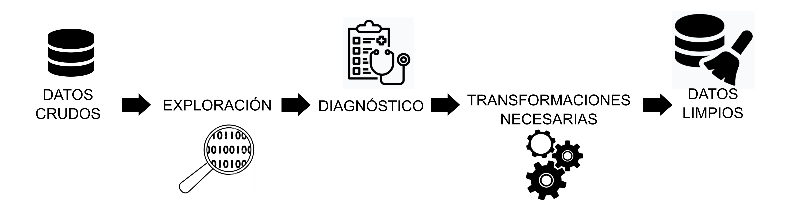

Encuentro 2
Sistemas de Inteligencia Artificial Generativa (como Gemini, Chatgpt, Claude y otros) capaces de crear contenido nuevo (texto, código, imágenes) a partir de un prompt.
Es una herramienta poderosa para traducir peticiones complejas sobre análisis de datos en código R funcional.
Convierte el lenguaje natural en el lenguaje de programación que necesitamos para el análisis en salud.
| Ventaja | Descripción |
| Acelera el aprendizaje | Permite obtener código funcional inmediato para tareas básicas (filtrar, resumir, graficar), reduciendo la frustración inicial de la sintaxis de R |
| Eficiencia y productividad | Genera código para tareas repetitivas o tediosas, liberando tiempo para enfocarse en la interpretación de los resultados |
| Descubrimiento de funciones | Puede sugerir el uso de funciones y paquetes tidyverse que el usuario no conocía, ampliando la caja de herramientas del analista |
| Traducción de ideas | Es útil para traducir conceptos epidemiológicos (“quiero un gráfico de la evolución temporal de casos”) a la lógica de programación requerida. |
El “Riesgo de la alucinación” (fallo de código): La IA puede generar código incorrecto, obsoleto o que no se ajusta a las últimas versiones de un determinado paquete. Siempre ejecuta y verifica el código línea por línea. No copiar y pegar sin entender.
El principio de la Caja Negra (opacidad): Confiar ciegamente en el código genera una dependencia que inhibe el aprendizaje profundo de R y la lógica de programación. (pereza cognitiva). La IA debe ser una herramienta para aprender, no un reemplazo de la comprensión. El objetivo es comprender la lógica de cada función generada.
Privacidad y datos sensibles (ética): NUNCA ingreses datos reales (incluso anonimizados) o sensibles de pacientes en el prompt de una IA pública. Usa datos ficticios o descripciones de la estructura del data frame (ej. “tengo una columna edad numérica y una columna diagnostico categórica”).
Sesgos y contexto: La IA no comprende el contexto epidemiológico o clínico complejo. El código puede ser correcto, pero la interpretación sigue siendo responsabilidad humana. El prompt debe ser lo más específico posible para mitigar ambigüedades. La validación del resultado final es indispensable.
La IA genera código, pero como profesionales nosotros generamos el conocimiento y somos responsables de lo que informemos y/o publiquemos.
Entender el código.
Verificar los resultados.
No compartir información confidencial.
Una instrucción, pregunta o entrada de texto que se proporciona a un modelo de Inteligencia Artificial (IA) generativa para obtener una respuesta, código o salida específica.
El prompt es el input que guía la generación de la IA.
Es la formulación del problema o la solicitud que especifica el contexto (p.ej., lenguaje R, tidyverse), el objetivo (p.ej., filtrar datos, crear un gráfico) y las restricciones (p.ej., formato de salida) para asegurar que el resultado sea preciso y relevante para la tarea requerida.
El prompt en la generación de código
Para la programación, el prompt es la especificación precisa que le indica a la IA:
Qué hacer (ej. calcular la media).
Cómo hacerlo (ej. usar el paquete dplyr).
Con qué datos (ej. data frame datos_salud y columna edad).
La “personalidad” del prompt (Actuar como..) : Instruir a la IA para que asuma un rol mejora la calidad y el formato de la respuesta.
Especificación del formato de salida: Define exactamente cómo quieres que se entregue el código.
Iteración y refinamiento (“la conversación”): La ingeniería de prompts no es solo un prompt único, sino una conversación.
Pensamiento crítico y verificación (el límite de la IA): El principio más importante es que el código generado por IA debe ser revisado y entendido.
“El efecto de la IA actual no extiende la cognición, sino que la automatiza, convirtiendo el pensamiento en un servicio. En lugar de democratizar el aprendizaje, privatiza el acto de pensar bajo control corporativo.” - Ronald Purser
AI is Destroying the University and Learning Itself - Noviembre 2025
La etapa de depuración o limpieza de datos comienza con la exploración inicial y el diagnóstico adecuado de cada variable de interés de la tabla de datos cruda.
Interviene siempre, el objetivo del análisis, el protocolo de análisis pensado y el diccionario de datos asociado a la tabla.

El análisis exploratorio de datos (EDA en inglés) persigue un primer grupo de objetivos:
Habitualmente hablamos de calidad de los datos en relación a los items anteriores.
Una segunda etapa nos va servir para conocer la distribución de las variables de interés a partir de:
Vamos a presentar algunas funciones de paquetes especiales que nos permiten hacer este trabajo, aunque dentro del universo de librerías de R encontraremos muchos mas.
skimr
Está diseñado para obtener un resumen rápido de la estructura de tablas de datos y es compatible con el ecosistema tidyverse.
dlookr
Se define como una colección de herramientas que permiten el diagnóstico, la exploración y la transformación de datos. El diagnóstico de datos proporciona información y visualización de valores faltantes, valores atípicos y valores únicos y negativos para ayudarle a comprender la distribución y la calidad de sus datos.
naniar
Proporciona funciones analíticas y visuales de detección y gestión de valores faltantes. Es compatible con el mundo “tidy” de tidyverse y posibilita el trabajo de imputación.
Variables de tiempo (paquete lubridate)
Cadenas de caracteres (paquete stringr)
Factores (paquete forcats)
Un ejemplo útil y muchas veces necesario es extraer de una variable fecha (puede contener la fecha de atención, fecha de inicio de síntomas, fecha de determinación ante un resultado de laboratorio, etc), la semana epidemiológica (con el año epidemiológico asociado).
Paquetes incluidos dentro del tidyverse como lubridate permiten hacerlo fácilmente con funciones epiweek() y epiyear().
Otro de los problemas con los debemos lidiar muchas veces es tener observaciones duplicadas.
Las tareas habituales en estos casos son:
Tomemos el camino que más nos convenga, el primer paso será siempre detectar la o las filas duplicadas.
Para esta tarea echaremos mano a una función del paquete janitor que se llama get_dupes().
Las observaciones duplicadas pueden ser completas, generalmente a raíz de algún problema informático o bien parciales (clave de identificación - habitualmente nuestras tablas tienen identificadores únicos de las unidades de análisis o una serie de identificadores que resultan en una clave combinada).
Los datos faltantes o perdidos (en inglés conocidos como missing) pueden ser de dos tipos:
A los primeros se le suele asignar un valor concreto (“S/D”, etc.) y tenerlos en cuenta en el conteo de frecuencias, en cambio a los segundos se los elimina o imputa dependiendo de la situación.
Antes de decidir el procedimiento a seguir, debemos detectarlos y describirlos.
De las muchas funciones que tiene el paquete seleccionamos algunas para mostrar su utilidad en la tarea habitual.
miss_var_summary(): proporciona un resumen sobre los valores NA en cada variable del dataframe
gg_miss_upset(): genera un gráfico Upset sobre los valores NA de dataframe
replace_with_na(): reemplaza valores específicos con valores NA (casos de 9, 99,)
replace_na_with(): reemplaza valores NA con valores específicos (ante NA´s informativos)
Llamamos así al grupo de funciones que evaluan una expresión lógica (verdadero / falso) y ejecutan acciones basadas en el resultado.
Utilizan los operadores comparativos y los conectos lógicos para construir la o las expresiones logicas necesarias.
Suelen generar nuevas variables y siempre se incluyen dentro de una función mutate().
La función if_else() devuelve valores dependiendo del resultado de una condición lógica (TRUE/FALSE).
Los valores devueltos para cada observación se almacenan dentro de una variable definida en mutate().
Crea una nueva variable denominada edad_dicotomica con valores según la edad de cada observación cumpla con la condición de ser “Mayor a la mediana” o “Menor o igual a la mediana”.
La función case_when() ejecuta una vectorización múltiple de funciones if_else().
Los valores devueltos para cada observación se almacenan dentro de una variable definida en mutate().
Crea una nueva variable llamada grupo_etario con grupos irregulares a partir de la variable edad.
Para recodificar valores, casos donde muchas veces debemos etiquetar variables que estan originalmente codificadas, podemos usar recode_values(). La función, que se incluye dentro de un mutate(), toma valores en el lado izquierdo para compararlos con una sola entrada que proporcionarás como primer argumento.
Una vez finalizadas las correcciones de los problemas encontrados podemos concluir que tenemos nuestros datos “limpios” y debemos almacenarlos.
Para esta tarea, debemos decidir en que formato los guardamos. Se aconseja hacerlo un formato csv (texto plano separado por comas), dado que es universal; pero se puede seleccionar otro formato.
Las funciones de tidyverse (pertenecientes a readr) apropiadas para la exportación de datos comienzan con write_:
También el propio lenguaje R tiene un formato nativo de almacenamiento del entorno de trabajo produciendo archivos con extensión .RData.
Las funciones, pertenecientes a R base, para guardar y leer los .RData son:
save(): almacena el contenido del entorno de trabajo, pudiendo seleccionar cual o cuales objetos deseamos guardar.
load(): lee archivos .RData y su contenido (sea este uno o varios objetos)
Cabe aclarar que cuando nos referimos a objetos estamos hablando de cualquier estructura de datos y también a funciones propias.
Un paquete interesante para exportación de datos en formato xlsx es writexl.
Con sintaxis similar a write_csv() o write_csv2(), la función write_xlsx() permite exportar en formato Excel el dataframe que tengamos en el entorno de RStudio.
Enviar el archivo comprimido a christianballejo@gmail.com antes del próximo encuentro.
Residencia Medicina General